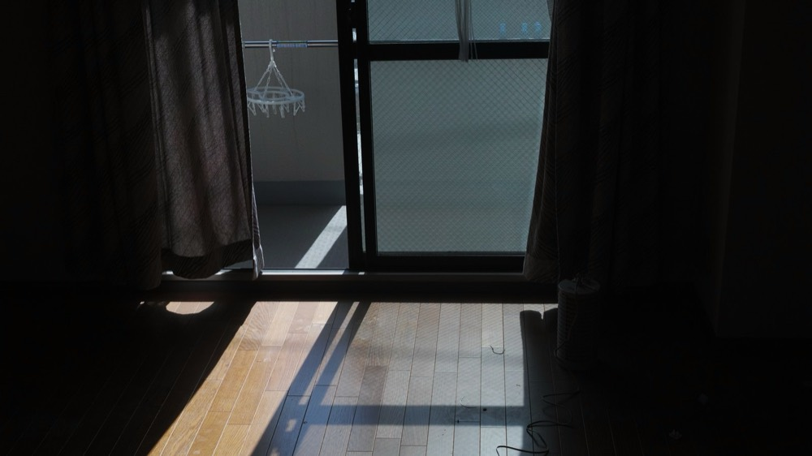

初めて賃貸物件を契約するにあたり、何を確認すればいいのか分からず不安に感じている方もいるのではないでしょうか。賃貸契約は、初期費用の内訳や契約書の内容を事前に確認しておくことで、契約後のトラブルを防ぐことができます。この記事では、初めての賃貸契約で確認しておきたいポイントと、トラブルになりやすい注意点を解説します。賃貸契約に関する情報を整理し、契約前に知っておきたい内容をまとめました。
初めての賃貸契約で知っておきたい基礎知識
まずは、賃貸契約がどのようなものか、基本的な仕組みから確認しておきましょう。
賃貸契約とは？
賃貸契約とは、物件のオーナー（貸主）と借りる側（借主）が、部屋を借りる条件について取り決める契約のことです。家賃や契約期間、禁止事項などが契約書に明記され、双方がその内容に同意することで契約が成立します。口約束ではなく、書面で条件を確認し合う点が重要です。
契約から入居までの流れ
一般的には、物件探し→申し込み→入居審査→重要事項説明→契約書の締結→初期費用の支払い→鍵の受け渡しという流れで進みます。特に「重要事項説明」は、宅地建物取引士が物件の権利関係や設備状況、契約解除の条件など法的に必須の内容を説明する重要な工程です。分からない点はその場で必ず質問し、納得したうえで次に進みましょう。
賃貸契約前に確認しておきたいこと
契約を結ぶ前に、必ず確認しておきたいポイントを見ていきましょう。
初期費用の内訳を確認する
初期費用には、敷金・礼金・仲介手数料・前家賃・火災保険料・鍵交換費用など、複数の項目が含まれます。「敷金礼金ゼロ」とうたう物件でも、清掃費や保証会社利用料など別の名目で費用がかかることがあるため、合計額と内訳を必ず確認しましょう。
契約期間と更新条件を確認する
契約期間は2年間が一般的ですが、更新時に更新料が発生するかどうかは物件によって異なります。また、「契約から1年以内に退去する場合は家賃1か月分を違約金として支払う」といった短期解約違約金の特約が付いている物件もあります。転勤や引っ越しの可能性がある方は、この点を事前に確認しておくと安心です。
契約書を確認する際の注意点
契約書は署名する前に、細部までしっかり目を通すことが大切です。
特約事項の内容を必ず読む
契約書には、物件ごとに個別の「特約事項」が記載されていることがあります。ペット飼育の可否や楽器演奏の制限、先ほど触れた短期解約違約金などがここに書かれている場合が多いため、読み飛ばさずに確認しましょう。分からない条項があれば、署名前に不動産会社に質問することが大切です。
原状回復の範囲を確認する
原状回復とは、退去時に部屋を入居前の状態に戻すことを指しますが、経年劣化や通常使用による傷みまで借主が負担する必要はありません。どこまでが借主負担になるのか、契約書の記載やガイドラインをもとに事前に確認しておくと、退去時のトラブルを防げます。
住んでから「こんなはずじゃなかった」とならないためのポイント
契約時だけでなく、実際に住み始めてからトラブルになりやすいポイントもあらかじめ知っておきましょう。
退去時の敷金精算でのもめごと
退去時に、想定より多くのクリーニング費用や補修費用を請求され、トラブルになるケースは少なくありません。入居時の部屋の状態を写真で記録しておくと、原状回復の範囲について不当な請求をされた際の証拠になります。
更新料に関する認識のズレ
「更新料がかかると思っていなかった」というトラブルもよくあります。契約書に記載されている更新料の金額とタイミングを、契約時にきちんと確認しておきましょう。
設備故障時の費用負担トラブル
エアコンや給湯器などの設備が故障した場合、経年劣化によるものであれば貸主負担、借主の故意・過失によるものであれば借主負担になるのが一般的です。ただし、この判断が曖昧になりトラブルになることもあるため、故障に気づいたら自己判断で修理せず、まず管理会社や貸主に連絡することが大切です。
近隣トラブル
生活音やゴミ出しのルール、共用部分の使い方をめぐる近隣トラブルも、住んでから直面しやすい問題です。入居前に、物件や共用スペースの管理状況を確認しておくと、入居者のマナーの傾向をある程度把握できます。
まとめ

- 賃貸契約は、契約から入居までの流れと重要事項説明の内容を理解しておくことが基本
- 初期費用の内訳、契約期間、更新条件は契約前に必ず確認する
- 特約事項と原状回復の範囲は、契約書を読み込んで把握しておく
- 敷金精算・更新料・設備故障・近隣トラブルなど、住んでから直面しやすい問題も事前に知っておくと安心
初めての賃貸契約は分からないことが多く不安になりがちですが、事前に確認すべきポイントを押さえておけば、契約後のトラブルを大きく減らすことができます。
契約書の内容が難しく感じる方には、「すまいの相談室」がおすすめです。契約書のチェックポイントや特約事項の見方を、専門スタッフと一緒に確認できるオンライン相談サービスです。初回相談は無料で利用できます。契約前に不安な点がある方は、まずは無料相談から試してみてはいかがでしょうか。
この記事について
想定キーワード「初めての賃貸契約 注意点」で検索上位を狙う構成で執筆しました。競合記事のリサーチから見出し構成、本文、まとめ、CTA、メタディスクリプションまで一貫して担当しています。
同じ流れで、ご依頼のキーワード・トンマナに合わせた記事を執筆します。
執筆のご相談はこちら